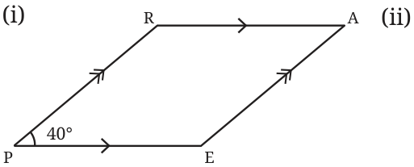
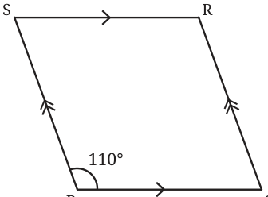
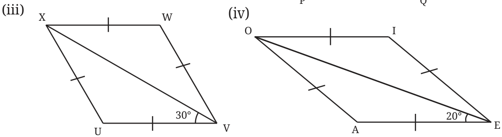
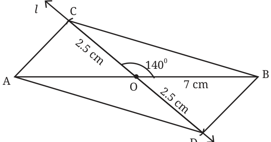
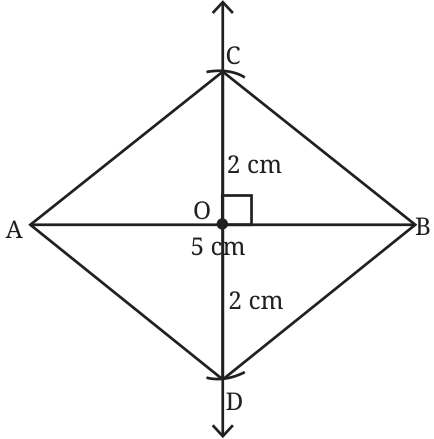

- 1.Find the remaining angles in the following quadrilaterals.



Ans.
- (i)\(\angle E = 140 ^{\circ}\) , \(\angle R = \angle E = 140 ^{\circ}\) and \(\angle A = \angle P = 40 ^{\circ}\)
- (ii)\(\angle Q = 70 ^{\circ}\)
\(\angle S = 70 ^{\circ}\) and \(\angle R = 110 ^{\circ}\)
- (iii)\(\angle XVU= \angle XVW=30 ^{\circ}\)
\(\angle WXU= \angle UVW=60 ^{\circ}\) . So, \(\angle UXV= \angle WXV=30 ^{\circ}\)
\(\angle U = 180 ^{\circ} - \angle WVU = 180 ^{\circ} - 60 ^{\circ} = 120 ^{\circ}\) , \(\angle W = \angle U = 120 ^{\circ}\) .
- (iv)\(\angle OEI = 20 ^{\circ}\) , \(\angle AOE = 20 ^{\circ}\) , \(\angle EOI = 20 ^{\circ}\) , \(\angle A = 140 ^{\circ}\) , \(\angle I = 140 ^{\circ}\)
- 2.Using the diagonal properties, construct a parallelogram whose
diagonals are of lengths 7 cm and 5 cm, and intersect at an angle of \(140 ^{\circ}\) . Ans. Draw a line segment

\(AB = 7\) cm
Take mid point O on AB. Draw an angle \(140 ^{\circ}\) at O on AB. Draw an arc 2.5 cm from O to line l at C & D. Join
Now, ADBC is the required parallelogram.
- 3.Using the diagonal properties, construct a rhombus whose diagonals
are of lengths 4 cm and 5 cm. Ans. Draw a line segment \(AB = 5\) cm Take mid point ‘O’ on AB. At ‘O’ draw a line perpendicular or an angle \(90 ^{\circ}\) at ‘O’ . Take point C& D on perpendicular such that \(OC = OD = 2\) cm. Join AD, BD, CB & AC. Now ADBC is the required rhombus.

Page No. 107